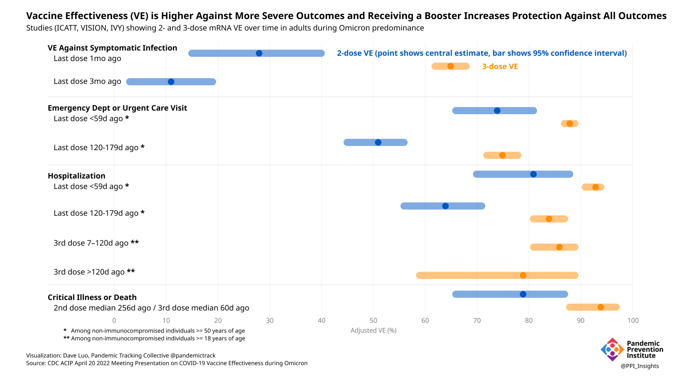

The Challenge of Measuring Vaccine Effectiveness
Tightly controlled vaccine trials measure efficacy. In real life, vaccine effectiveness is more complicated. Here are some things to watch out for when interpreting vaccine effectiveness data.
This piece is originally published at rockefellerfoundation.org/case-study/the-challenge-of-measuring-vaccine-effectiveness/
In mid-November 2020, as Covid-19 cases were rising and two thousand people were dying every day in the US, Americans needed hope. They got it.
Hope arrived in a syringe. Effective vaccines were developed in record time, with the promise of ending the current pandemic. The scientific discoveries behind that quick vaccine development are also key to halting future pandemics.
Over the course of two days, Moderna and Pfizer announced the results of their phase 3 vaccine trials. Both vaccines had more than 90% efficacy against symptomatic disease, an efficacy much higher than the minimum standard of 50% set by the US Food and Drug Administration (FDA). Even 75% was considered optimistic by Dr. Anthony Fauci, director of the National Institute of Allergy and Infectious Diseases (NIAID). The quick development of such highly efficacious vaccines—and the emergency use authorization soon thereafter—led many to predict that the end of the pandemic was in sight.
Globally, 36 different vaccines have been approved for use by national regulatory agencies as of May 2022. Yet the pandemic continues, and breakthrough infections in fully vaccinated (and boosted) individuals are increasingly common. There are numerous reasons for the continuation of the pandemic, but attempting to tease out the role of vaccine effectiveness is a complicated matter.
Efficacy and Effectiveness are not the same thing.
The original measures of vaccine efficacy were determined by tightly controlled clinical trials. Vaccine effectiveness, on the other hand, is measured in “real life,” in a variety of situations. As the immune status of individuals varies due to vaccination and infection, and as the virus evolves, the picture becomes murkier. Great care must be taken in interpreting vaccine effectiveness from research studies, and even more care is required when inferring vaccine effectiveness from breakthrough infection data reporting systems.
Crude estimates of vaccine effectiveness from vaccine breakthrough data can yield unexpected or inaccurate results.
Vaccine effectiveness (VE) measures how much vaccination reduces the rate of Covid-19 cases, hospitalizations, or deaths in a vaccinated population compared to an unvaccinated population. In theory, converting vaccine breakthrough rates to VE may seem straightforward, but how the rates in vaccinated and unvaccinated populations have been tracked, calculated, adjusted, and controlled varies widely across different sources and studies. These choices can introduce biases that can have a tangible impact on how a vaccine’s effectiveness is interpreted at a given time. In fact, the practice is strongly discouraged by professional bodies like the UK Health Security Agency (UKHSA), writing that, even if available,
“This raw data should not be used to estimate vaccine effectiveness as the data does not take into account inherent biases present such as differences in risk, behaviour and testing in the vaccinated and unvaccinated populations.”
The World Health Organization (WHO) provides further guidance on conducting VE evaluations, stating that, while crude VE estimates based on reported vaccine breakthrough data can serve as a rapid screening tool for assessing vaccine performance, especially in monitoring the impact of emerging variants, crude estimates that differ from expectations should trigger more rigorous evaluation.
Table 1. WHO guidance on conducting VE evaluations using breakthrough case data outlines potential reasons for crude VE estimates to differ from expectation based on clinical trial and observational study results. Differing crude estimates may have valid or invalid reasons that require more rigorous studies to examine.
Controlled studies can yield more reliable measurements of VE.
More rigorously controlled studies can often account for a wider variety of potential confounding factors. For example, such studies can be designed from the outset to gather more granular data—often to the individual or household level—to help tease the competing strands of explanation apart. Controlled studies use a variety of techniques and analyses to help provide a complementary and overall more complete picture of which factors are driving changes in vaccine performance at a given time. These studies are generally large enough and have data detailed enough to test possible explanations for VE estimates that differ from expected values.
- Studies can be designed to separate populations by their time since completing a primary series or booster. This clarifies timing when subjects are transitioning from the broad categories of “fully vaccinated with primary series” to “boosted.”
- Stratifying outcomes by time period or variant predominance can more precisely account for differences in vaccine protection due to the ebb and flow of new variants, since VE in the time of Delta can be very different from VE in the time of Omicron.
- They can look at VE for different vaccine products and dose combinations, since the different doses, molecular compositions, and platforms may have different outcomes, and different populations may have received different vaccines.
- Outcomes such as asymptomatic infection, symptomatic infection, hospitalization, critical illness, or death can be more precisely defined, measured, and separately assessed.
- An increasingly complex population immunity landscape comprising those with varying levels of vaccine-induced immunity (from which vaccine products, number of doses, time elapsed since vaccination) as well as infection-induced immunity (prior infection by which variant and how much time has elapsed) can be disentangled.
The original vaccine trials were randomized controlled trials, where some subjects were given the vaccine and others were given a placebo to determine vaccine efficacy. The US Centers for Disease Control and Prevention (CDC) has ongoing systems in place to monitor infection in long-term care facilities and Covid-19 cases, deaths, and hospitalizations in the general population, comparing these outcomes between vaccinated and unvaccinated individuals. Case studies and clinical observations can be used to highlight initial findings, such as the reports from an early outbreak of the Delta variant in Massachusetts. Information gleaned from these observations cannot reliably estimate vaccine effectiveness because of confounding factors and a lack of controls, but they can be used to inform more carefully controlled studies.
Several kinds of studies can be used to more precisely examine real-life vaccine effectiveness. Household contact studies are designed to determine the level of transmission that occurs from infected individuals to their close contacts (and to see if vaccination affects the level of transmission). Case-control studies (including test-negative designs) can identify similarly matched individuals with and without Covid-19 and compare their vaccination status. Cohort studies can look at individuals with different levels of vaccination and follow those people to see if they go on to experience the designated outcome (such as infection, symptomatic illness, hospitalization, or death).
Table 2. Key vaccine effectiveness studies and monitoring systems used in the US in an interactive list that is sortable and searchable by name, outcome, population, or study design.
Controlled studies can also produce misleading results.
Even within these more rigorous study designs, the devil can be in the details.
- Sample sizes can be small, particularly when looking at many subgroups or when there has been less time to vaccinate a group (as with younger children most recently becoming eligible for vaccination).
- Outcomes can be rare, which is why data on deaths in younger populations is often too sparse to draw strong conclusions.
- Confidence intervals, which show a range of values that are consistent with the data from a study, can be very wide. They can also overlap, meaning comparison groups may not be significantly different.
Because of these issues, study findings showing only small differences or wide confidence intervals without a strong evidence base are sometimes treated conservatively with an honest “We don’t know right now.” Any new information, such as the newly emerging trends described above, should be scrutinized closely and compared with other sources. It may be a trend that indicates something real and significant, or might just be a blip on our pandemic data landscape.
There are many things to consider when interpreting VE studies.
It may be tempting to read a news headline—or even a tweet—to draw conclusions about what a VE study reports, but it is important to find out more about how the study was conducted. Some characteristics of studies that can affect how they may be interpreted include:
- Study design: Different study designs can have advantages and disadvantages.
- Sample size: A small sample size is more likely to show less conclusive and more wide-ranging results.
- Subject characteristics: The age of subjects can have a large effect on VE. Other characteristics might include immunocompromised status, comorbidities, access to testing or healthcare, or behavioral characteristics, such as occupational exposure or level of risk tolerance.
- Vaccine product and dose: It is important to note the vaccine manufacturer and type, along with the number of doses and interval between doses. The composition of “vaccinated” and “unvaccinated” populations might be affected by the inclusion of partially vaccinated individuals, or those who received a booster.
- Prior infection: As the number of infections rises, the number of previously infected individuals grows. A prior infection can affect vaccine effectiveness, sometimes acting as an additional dose.
- Endpoint and outcome definition: VE can be measured against an array of outcomes of increasing severity, including: infection (which may be asymptomatic), transmission, symptomatic illness, hospitalization, ICU admission, or death. How these particular outcomes are defined can also lead to clear differences in VE assessments, even against outcomes that could fall in the same broad category.
- Reference group definition: VE can also be measured relative to different reference groups for comparison. Most are measuring the benefit of vaccination against a fully unvaccinated group but the value of booster doses could be compared against those who received a primary vaccine series. An even newer example is the evaluation of 4th dose effectiveness compared to primary series plus boosted (totaling 3 mRNA doses) recipients in Israel.
- When the study was conducted: The initial vaccine trials performed in 2020, when the ancestral SARS-CoV-2 strain dominated, yielded different results from newer VE studies performed when the Delta variant was dominant. Those, in turn, will differ from the newest studies against Omicron due to different transmissibility, virulence, and immune evasion properties of these new variants.
- Time since vaccination: Vaccine-induced immunity wanes over time, which is particularly evident with Omicron as the dominant circulating variant.
The vaccines remain highly effective.
No single study (out of more than 1,000 documented by the WHO) can determine vaccine effectiveness. Systematic reviews of these studies, with a critical eye to the above considerations, offer a more complete assessment of vaccine effectiveness. The best-controlled studies, however, consistently show that boosters significantly improve VE against both symptomatic disease and more severe outcomes, even during Omicron’s predominance.

Going forward, these questions and studies will only become more complicated. Population immunity will continue to wax and wane. More vaccines, with varying targets, will come to market. The number of doses each person has received (and/or infections that person has experienced) will increase. It will then be even more important for data and studies to be presented transparently, with both their strengths and limitations clearly laid out. Individuals will rely on this information to make choices in their everyday lives. Policy makers will rely on it to fashion next steps. Increasing complexity will require more sustained investment in planning and communication.